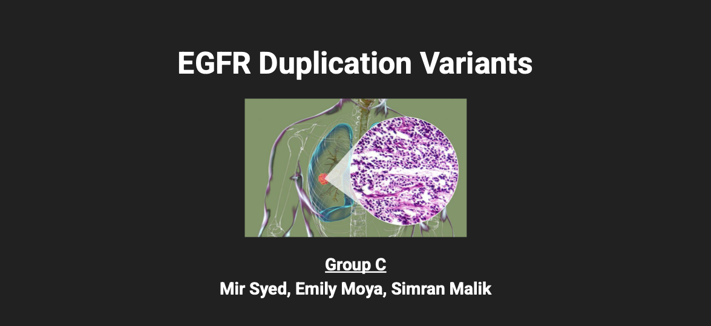
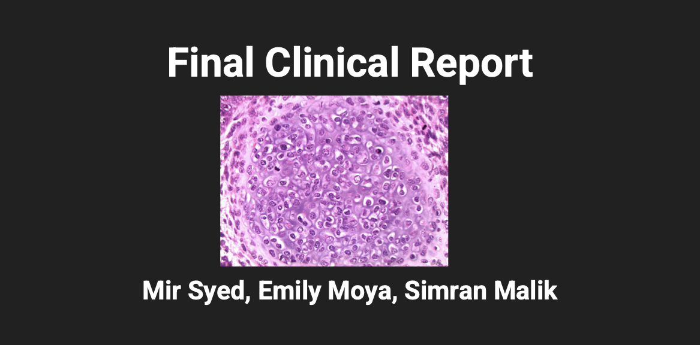

Name: Simran (Summer) Malik
Program: Cancer Genomics Research Summer Institute
Institution: The Jackson Laboratory (JAX)
Dates: June 2025 - July 2025
Research areas: Cancer genomics, precision medicine, bioinformatics, next-generation sequencing, and clinical variant interpretation
I was selected for the Cancer Genomics Research Summer Institute at The Jackson Laboratory, where I received intensive training in cancer genomics and precision medicine while working alongside clinicians and researchers. I applied bioinformatics and computational methods to analyze next-generation sequencing data, evaluate variant pathogenicity, and study how genomic findings can inform treatment strategies.
My work involved clinical genomics resources including OncoKB, COSMIC, and CIViC. I investigated driver and passenger mutations, resistance mechanisms, somatic variants, variant type, and clinical tier classification. A major part of the experience was learning how to move carefully from a computational prediction to a clinical interpretation, especially when evidence is strong in one cancer type but limited in another.
In a collaborative peer-teaching project, we explained the biological and clinical difference between a six-nucleotide duplication inside EGFR and six additional copies of the entire EGFR gene. The first change can alter the structure or activation state of the receptor, depending on its location. Whole-gene amplification can instead increase EGFR expression and flood the cell with growth signaling.
We connected both changes to sustained proliferative signaling, the PI3K/AKT and MAPK/ERK pathways, EGFR inhibitor response, bypass signaling, and treatment resistance. The exercise showed why two events that are both called "duplications" can have different molecular mechanisms and different clinical consequences.
Collaborators: Mir Syed, Emily Moya, and Simran Malik
Our final clinical report evaluated three somatic variants in an educational testicular-cancer case: AR T878A, TERT P308Hfs*43, and KRAS G12C. For each variant, we considered the affected gene, variant class, predicted functional consequence, available evidence, and clinical significance tier.
The report considered KRAS G12C inhibitors such as sotorasib or adagrasib, while clearly confronting the limitation that evidence and approvals from one tumor type do not automatically transfer to another. That distinction between biological plausibility, database evidence, clinical actionability, and approved treatment was one of the most important lessons of the exercise.
Collaborators: Mir Syed, Emily Moya, and Simran Malik

